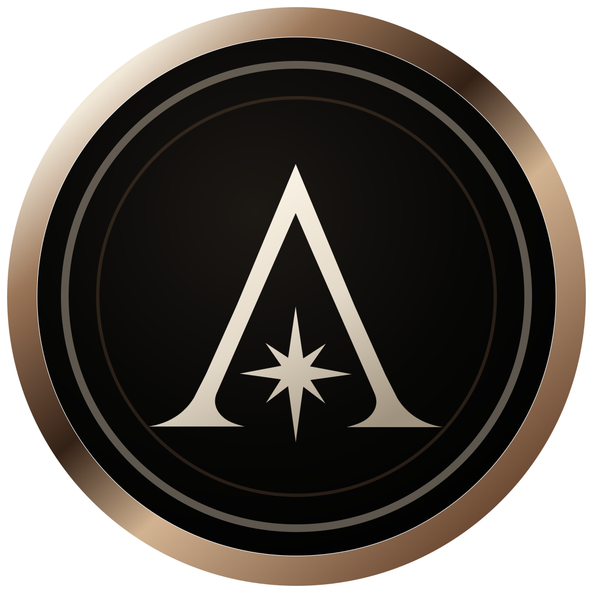
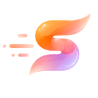

↓
A niche is meant to belong to a few.
We disagree.
It's just unnamed, unimagined, unasked.
Look around. The room was full.
Made so far
 TitanKeysA keyboard for the Titan 2 Elite, down to the smallest detail.
TitanKeysA keyboard for the Titan 2 Elite, down to the smallest detail.

AsterionTitanium rings with a mark that feels like only yours.
SwiftJobs In the worksJob hunting, without the grind everyone does alone.Solve a niche everyone has.